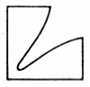
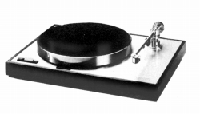
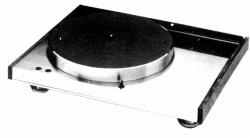
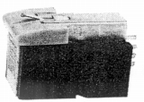
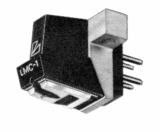
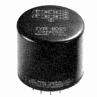
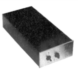
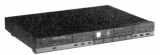
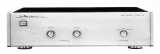
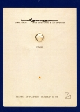

LUXMAN/LUX（ラックス）
1925年創業の老舗ブランド。古くはトランスが、その後はアンプで有名となったブランドだが、1970年代後半には独自の薄型デザインのアナログディスクプレイヤーに力を入れていた時代もあった。そうした時代に昇圧トランスやMC型カートリッジを出していた。
1980年代後半には当時資本関係のあったアルパインとの共同ブランド、アルパイン/ラックスマンでプリメインアンプでフォノ入力を省略しDAコンバーター内蔵の、いわゆる「デジタル対応アンプ」の先駆けの一つとなったが、それに対するオプション展開として、単体のイコライザーアンプを比較的早い時期に手がけた。またフォノ入力の省略は高級セパレートアンプにも及び、結果として国産高級イコライザーアンプを手がけるブランドとなった。


(左 PD-272 右 PD-441)
�T.カートリッジ
1.MM型

2.MC型

(LMC-1)
�U.昇圧トランス・ヘッドアンプ・イコライザーアンプ

(8025)
（ヘッドアンプ） CX-1

(LE-109)（フォノイコライザーアンプ=アルパイン/ラックスマンブランド） LE-109 LE-117
 
（フォノイコライザーアンプ=ラックスマンブランド） E-06 E-06a E-03
�V.その他
ターンテーブルシート2点とカートリッジ・ディマグネタイザー。